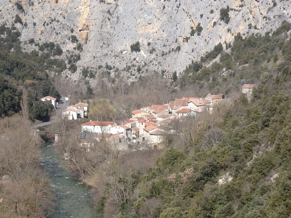

Saint Martin Lys
Complement 2

Plan du site (suite)
Annexes sur la voie ferrée Quillan-Rivesaltes
Plans complémentaires préparatoires
Plans complémentaires post attribution du lot 1
Passages à niveau de la ligne Quillan-Rivesaltes dans les Pyrénées orientales
Déraillement du 4 mars 1978 entre Maury et Saint Paul de fenouillet
Cliquer ici pour faire un Commentaire